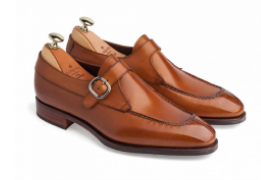
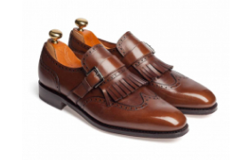

Museum calf — специально обработанная кожа, которую легко определить
по интересному «пятнистому» окрасу и «врождённой» патине. Такой окрас
делается не на обувной фабрике, а непосредственно на дубильне в
процессе обработки шкуры.
В магазине Checkroom есть несколько моделей, выполненных в такой коже.
Среди них челси Carmina 80216 на резиновой подошве Dainite на колодке
Rain в максимально широкой полноте ЕЕЕ.
МУЖСКИЕ МОНКИ

МОНКИ YANKO
Оригинальные туфли монки
в исполнении испанского бренда Yanko.
24 500 ₽

МОНКИ YANKO
Элегантные туфли монки Yanko выполнены из гладкой телячьей кожи.